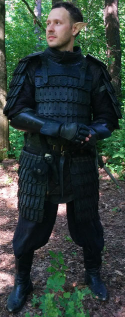

Личная страница Нимнара
Статус: Драар
Любимое оружие:
Samick SKB 50
История Нимнара
Нимнар родился и вырос в королевстве Дамбрат. Ребенок дроу и человеческой женщины, он вобрал в себя лучшие качества обеих рас.
Его мать была младшей дочерью одного из верховных жрецов Ловитар, церковь которой владычествовала в королевстве. С детства ее окружали боль и пытки – кровавые атрибуты жестокой богини. Но сердце ее не впустило в себя тьму. Всей душой она стремилась обрести себе другого покровителя, чтобы нести в мир свет и добро.
Отец Нимнара – Ранраен – был молодым, но необычайно умелым воином. Его мастерство заставило обратить на себя внимание оружейника правящего дома города Т'линдет и тот взялся лично обучать его. И хотя другие дроу кидали ему в спину завистливые взгляды, но на самом деле это было балансировкой на лезвии ножа. Семья Ранраена уже несколько поколений верно служила Элистраие и такая близость к правящему дому могла погубить всех. Но Ранраен пытался, во что бы то ни стало обрести силы, дабы встать на пути зла, что владело его сородичами.
Те, кто был посвящен в их тайну, говорили, что их свела сама Богиня. Встретившись у алтаря Лунной девы, они сразу поняли, что отныне их пути навеки сплетены.
Когда их ребенку пришло время появляться на свет, сама Элистраие пришла дабы отметить его своим светом. Однако это не осталось незамеченным. Разгневанная Ллот направила своих жриц по следу. Семья Нимнара опасалась, что жрицы смогут почувствовать окутанную серебряным сиянием душу ребенка, но сама Верховная мать прошла мимо, так ничего и не заметив. В честь чудесного спасенья ребенка назвали Гур – Обманувший Бурю.
Когда Гуру исполнилось три года, его семью предали. Верховным жрицам стало известно об отступниках, судьба их была предрешена. Взбешенный учитель его отца пришел со стражей в их дом, чтобы привести в исполнение приговор. Несмотря на свое мастерство Ранраен не смог противостоять ему. Дабы причинить умирающему как можно больше страданий, оружейник пообещал вырастить из его сына настоящего слугу Ллот. Сожалея об утрате своего лучшего ученика, он нарек ребенка Нимнар. Мать пыталась защитить свое дитя, но и ее сердце, прямо у Гура на глазах, пронзил клинок оружейника.
Учитель Ранраена держал свое слово. Он обучал Нимнара всячески стараясь погрузить душу мальчика, а затем юноши во тьму. И хотя Нимнар не помнил своих родителей, свое прошлое и жестокостью нрава стал выделяться даже среди дроу, но где-то в глубине, даже втайне от него самого, остался непогашенным маленький серебристый огонек.
Когда пришло время, учитель повел Нимнара и отряд таких же молодых убийц на крещение кровью. Никто из них никогда не видел эльфов, но все твердо знали, что это враги. Они ворвались в поселок ночью, Нимнара распирал всеобщий азарт убийства, но, вдруг, словно молния ударила в него. Он увидел как мать закрывает собой ребенка на которого опускается меч его учителя. Давние воспоминания рванулись из глубин, власть Ллот дала трещину, и внутренний свет запылал с неистовой силой. Сила Элистраие заполнила его тело, а разум – желание покарать творящих зло.
Нимнар пришел в себя только утром ничего не помня. Местные эльфы радушно приняли Нимнара, ведь они ясно чувствовали, то добро, что отныне согревало его душу. Те из них, кто был свидетелями событий, рассказали ему, что он в одиночку перебил почти всех нападающих, а самого оружейника разрубил надвое одним ударом. Хотя сила покинула его, но он чувствовал, что она рядом и если потребуется, придет на помощь. Старейшина эльфов рассказал Нимнару, что есть и другие дроу подобные ему, почитающие свою светлую богиню, и что до него доходили слухи о целом королевстве отринувших власть Ллот, где-то далеко-далеко на севере.
Около двух лет Нимнар путешествовал по странам Фаэруна, все приближаясь к конечной цели своего путешествия. Королевство Вэльдрин – туда направили его эльфы Кормантора.
Дальнейший путь Нимнара пролегал сначала на запад через пустыню Анаврок и Сероконечные Горы, потом через Высший лес, и дальше на север. Места эти были опасные, а потому остановиться и пополнить запасы Нимнар решил уже в эльфийском лесу. Как-то утром, проверяя ловушки, он обнаружил, что в одну из них попалась рысь. Какого же было его удивление когда она превратилась в очаровательную девушку-дроу. Девушка была разгневана, и Нимнар мог только догадываться о значении большей части слов, которыми она его награждала. Он попытался уверить ее в своих добрых намерениях, но освобожденная девушка тут же убежала и скрылась в лесу. Ночью к костру Нимнара пришел огромный седой медведь. Он некоторое время глядел в глаза полудроу, а потом развернулся и растворился среди деревьев. Проснулся Нимнар от запаха готовящейся на костре еды. Рядом сидела давешняя девушка. За разговором Нимнар узнал, что ее зовут Умбра и родом она из Вэльдрина. Когда выяснилось, что именно туда он и направляется, девушка предложила отправиться в путь вместе, так как давно собиралась вернуться на родину. Нимнар согласился. Совместное путешествие сблизило юношу и девушку.
В Вэльдрине Нимнар смог обрести новый дом. Его навыки и преданность Элистраие помогли ему занять место в рядах рейнджеров – лучших воинов королевства. Благословленный богиней, идущий под знаменем с двухцветным лисом да не затупиться его клинок, а стрелы не знают промаха.